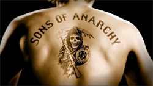

Sons of Anarchy is an American action crime drama television series created by Kurt Sutter for FX. Originally aired from September 3, 2008, to December 9, 2014, Sons of Anarchy follows the lives of a close-knit outlaw motorcycle club operating in Charming, a fictional town in California's Central Valley.
 Charlie Hunnam stars as Jax Teller, who after discovering a manifesto written by his late father and motorcycle club founder, begins to question himself, his relationships, and the club. Themes throughout the show include love, brotherhood, loyalty, betrayal, and redemption. The series explored vigilantism, government corruption, and racism. The show's plot depicts an outlaw motorcycle club as an analogy for human transformation. David Labrava, a real-life member of the Oakland chapter of Hells Angels, served as a technical adviser and also played the recurring character Happy Lowman.
Sons of Anarchy's third season attracted an average of 4.9 million weekly viewers, becoming FX's highest-rated series at the time and surpassing its other hits, The Shield, Nip/Tuck and Rescue Me. The season 4 and 5 premieres were the two highest-rated telecasts in FX's history.[4] The sixth season aired from September 10, 2013, through December 10, 2013. The seventh season of the series premiered on September 9, 2014. On November 3, 2014, FX announced that the seventh season would be its last. The series finale aired on December 9, 2014.[5][6]